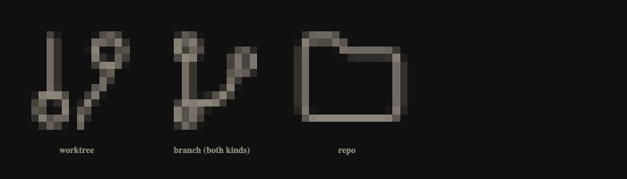

Every row in the ⌘K palette leads with a 15 px glyph that is supposed to say what kind of result it is. Specimens are drawn at shipped size from styles/tokens.css and app.css on contrived names. Source: features/sidebar/RepoSwitcherOverlay.tsx.
Rows 2 and 3 are not merely similar — isWorktreelessBranch() routes both local_branch and remote_branch to the same BranchIcon, so they are the identical drawing. Only __meta separates them, and it is at the far end of the row.

Vector magnification flatters an icon; this does not. At 15 px a stroke of 1.7–1.8 in a 24-unit viewBox is about 1.1 device pixels, and an r2 circle is a 3 px disc whose interior fills with antialiasing. “How many circles, and how big” is precisely the information the rasteriser destroys. The folder survives because what distinguishes it is its silhouette, not its interior.
Both are open line art: a vertical trunk on the left, round nodes, a curve to an upper-right node, at the same stroke weight. The whole distinction is node count and radius — the two channels that do not survive the raster.
Not a legibility problem — a missing drawing. Two of the four kinds have never had a mark of their own.
It carried no title, no tooltip, no aria-label, and not even aria-hidden, so it was an unlabelled graphic. The row is a role="option", so its name is built from its subtree: an .a11y-sr-only span now puts the kind first, a hoverTooltip gives the pointer the same word, and the <svg> is hidden from the tree. Shipped; see 2b.
Try next: “show 1a in the light theme” · “what do these look like beside the commit and file rows?”
Before drawing anything, the rule the raster gives us. A palette row is read peripherally — the eye is going to the name — so the glyph has one glance, at one eleventh the area of the word beside it.
So: separate the kinds by silhouette class, not by counting nodes. That is the rule the rest of this review is spent on, and it is also why the repo folder needs no work.
Screen reader, arrowing onto this row: “Local branch, spike/no-checkout, Demo · no worktree, work, 2 of 4”. Pointer on the glyph: a card reading Local branch.
Two patterns were available and the file uses both. The pin button takes hoverTooltip + aria-label because it is a control with its own name. The glyph took the folder's pattern instead — aria-hidden on the <svg> and an .a11y-sr-only span — because the row computes its accessible name from its own subtree, so text in the subtree is what actually gets announced. The short word goes to the reader (it is heard on every arrow key); the tooltip carries the same word for the pointer.
The glyph paints in --text-muted, which goes #8c857a → #736c64 against #ffffff. Contrast rises; the confusion does not move. This is a shape problem, not a colour one, so no token change can reach it.
Try next: “does the sidebar’s own worktree row have the same collision?” · “write 2a as a note in styles/AGENTS.md”
The branch glyph is the near-universal git mark and the one users arrive already knowing, so it keeps the open line-art class and the worktree moves out of it. The trap is obvious: a closed shape is what the repo folder already is, and trading a branch/worktree collision for a worktree/repo one is no gain. So every option below is drawn with the repo row directly beneath it — the adjacency that actually happens in the list.
The biggest silhouette break available: left-weighted, with a stem that no other mark in the row has, and asymmetric where the folder is a solid block. It also keeps the vocabulary — the stem-and-node is the branch's own language, and a worktree is a branch that has been given somewhere to live. Quiet at 15 px and survives the squint test in 4e.
The most legible of the five in isolation. The risk is semantic, not visual: PwrGit is one‑window‑per‑profile, so a window glyph on a row whose ↵ opens or focuses a window will be read as “open in a window” rather than “this is a worktree”. Against the folder it is also the weakest of the closed shapes — both are rounded rectangles of the same weight.
Moves the collision rather than solving it. At 15 px the dot has about 7×7 px of interior to occupy — interior detail is the channel 2a rules out — and the silhouette against the repo row is identical.
Separates perfectly: fill is the strongest channel in 2a, and “the repo is the outline, the worktree is the one that exists on disk” is a clean idea. But it is by far the heaviest mark in the panel, and worktree rows are the most common row in the list — a palette of them reads as a column of blobs pulling the eye off the names.
Legible and semantically fair. Slightly noisier than 3a — the offset back card is the sort of thin secondary edge that 1b shows going mushy — and “copy” is a duplicate-file idiom elsewhere in most toolbars.
Try next: “draw 3a at 13 px and 17 px” · “does 3a still read when the row is selected and tinted?”
Finding 2 is a different problem from finding 1: there is no legibility to recover, because there is only one drawing for two kinds. Every option keeps the branch silhouette for local (4a is settled — the shipped shape with its nodes filled, which is strictly crisper at 15 px for no change in what it means) and asks what “this one is not here yet” should look like. Local is the top row of each pair.
This pair is the control: it is what the palette looks like today, once the rings that fill in anyway (1b) are drawn as the dots they already become. Crisper, same meaning, near-zero risk — and it is still two identical rows, which is finding 2.
The prettiest idea and the one the raster refuses. A hollow r2.4 ring at 15 px is the exact case 1b convicts: it fills with antialiasing and reads as a slightly softer dot. Held against 4a in this pair the two rows are, again, nearly the same drawing.
The dash gap survives the raster where the hollow ring does not, and “not materialised” is the right idea for a ref that lives on a server. The caveat is honest: this is the weakest of the recommendations in this review. It is a real difference but a quiet one, and it should be looked at on a real list before it is committed to — hence the follow-up prompt below rather than a change in this PR.
Unmistakable at 15 px — a closed shape with a wide aspect, which is every channel 2a says holds. The cost is that a remote branch stops looking like a branch at all, and the palette loses the family resemblance that makes rows 2 and 3 obviously two versions of one thing. Take this if decisiveness matters more than the family.
{{hint}}
Try next: “settle 4b vs 4c with a two-up at 200 % zoom” · “does the remote mark belong in the sidebar ref sections too?” · “draw the tracking case — a local branch that has a remote”